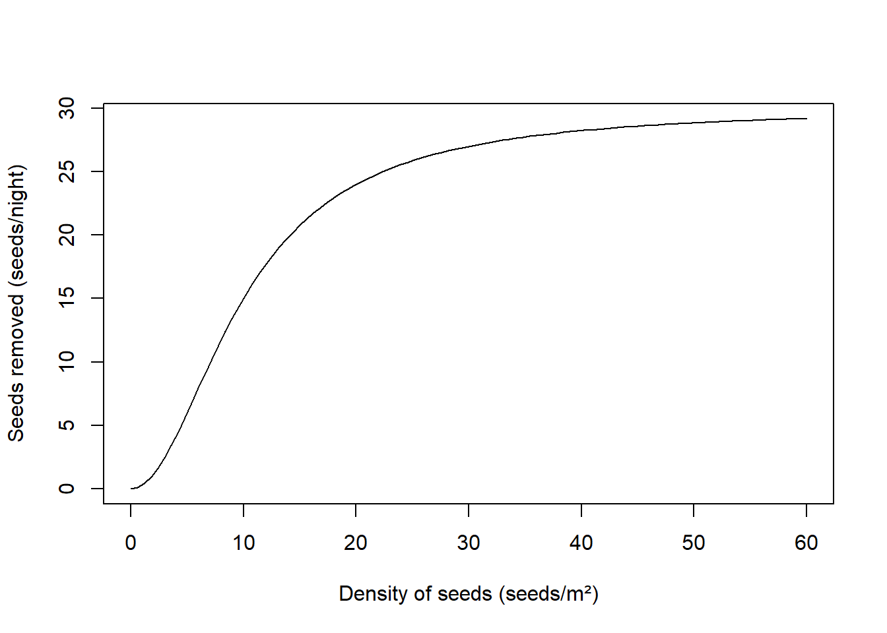
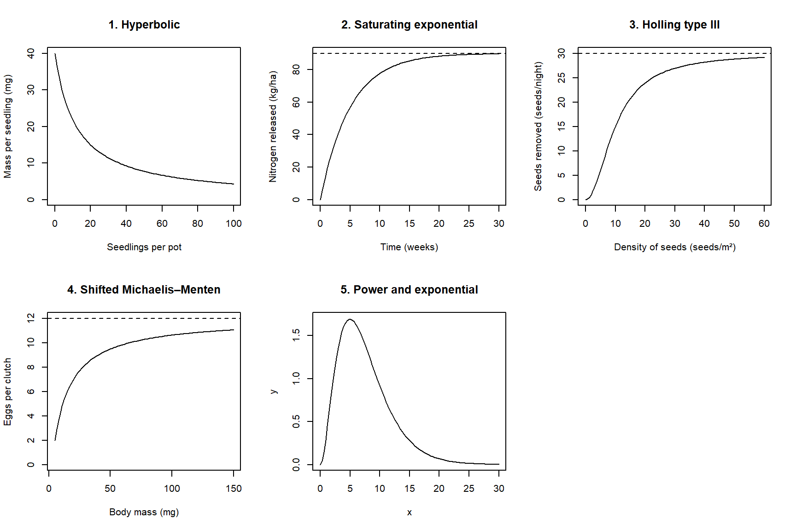
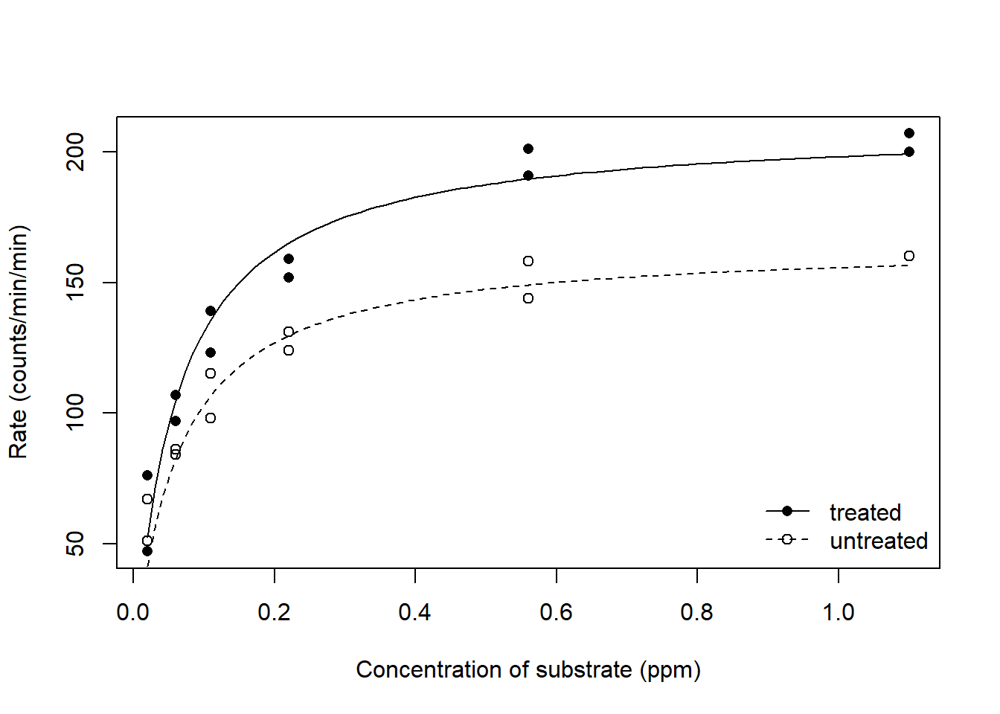
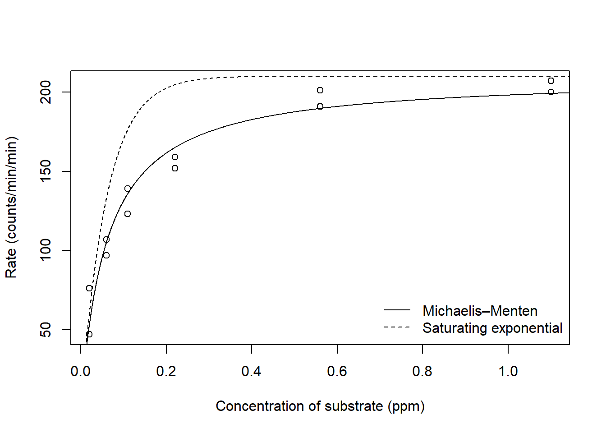
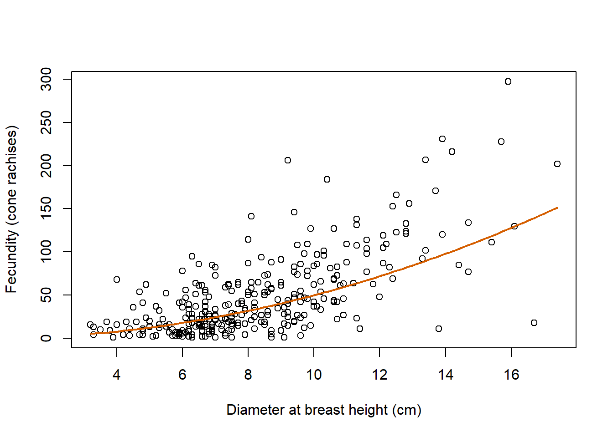
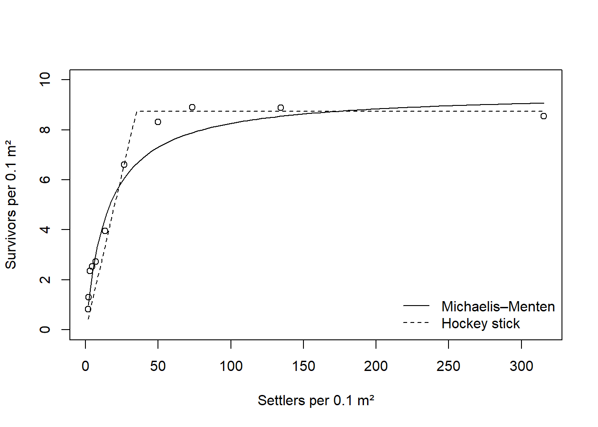
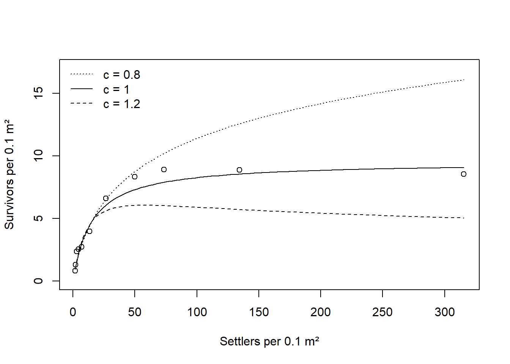

Chapter 5: Deterministic functions in ecology — solutions
Published
October 7, 2026
The fully worked first exercise is on the student practical page. These solutions use the same data and tasks as Exercises 2–7 on that page. The answers to the questions on paper are followed by a check in R where one is possible.
1 Exercise 2: Limits and end behaviour
The first thing to find out about a function is where it starts and where it ends. For each of the five functions below:
on paper, calculate the value of the function at the lower end of its domain and its limit as \(x\to\infty\), with their units;
on paper, find the simpler function that it resembles close to the lower end of its domain;
sketch the function by hand, and only then draw it with curve() to check your sketch.
The mean mass of a seedling (mg) as a function of the number of seedlings in a pot, \(x\): \(f(x)=\dfrac{480}{12+x}\).
The amount of nitrogen released from a crop residue (kg/ha) as a function of the time since it was ploughed in, \(x\) (weeks): \(f(x)=90\left(1-e^{-0.2x}\right)\).
The number of seeds removed by rodents in one night as a function of the density of seeds, \(x\) (seeds/m²): \(f(x)=\dfrac{30x^2}{100+x^2}\).
The number of eggs in the clutch of an insect as a function of the body mass of the female, \(x\) (mg), for \(x\ge5\): \(f(x)=2+\dfrac{10\,(x-5)}{15+(x-5)}\).
A function in which a power and an exponential compete, for \(x\ge0\): \(f(x)=0.5\,x^2e^{-0.4x}\). Compare its behaviour close to zero with that of a Ricker function.
1.1 Solution
1.1.1 Question 1
At \(x=0\) the function is \(f(0)=480/12=40\) mg, the mass of a seedling that grows alone. As \(x\to\infty\) the numerator stays at 480 while the denominator grows without bound, so \(f(x)\to0\): the function is a hyperbolic decline from \(a/b\) to zero. The parameter \(b=12\) is added to \(x\), so it is a number of seedlings per pot, and \(a=480\) has the units of \(y\) times those of \(x\) (mg times seedlings per pot).
Close to zero, where \(x\ll12\), the denominator is almost 12 and the function stays close to 40 mg. Far from zero, where \(x\gg12\), the denominator is almost \(x\) and \(f(x)\approx480/x\), so the mass of a seedling is inversely proportional to the number of seedlings. Between the two, at \(x=12\), the function has halved, \(f(12)=480/24=20\) mg. A sketch therefore starts at 40, passes through 20 at \(x=12\) and flattens towards zero.
1.1.2 Question 2
At \(x=0\) we have \(e^{0}=1\), so \(f(0)=90\,(1-1)=0\). As \(x\to\infty\) the exponential \(e^{-0.2x}\) goes to zero and \(f(x)\to90\) kg/ha, which is the amount of nitrogen that the residue can release. So \(a=90\) has the units of \(y\), and \(b=0.2\) multiplies \(x\) inside an exponential, so it is a rate, with units 1/week.
For a small argument the exponential is close to its tangent line at zero, \(e^{-u}\approx1-u\). With \(u=0.2x\),
so close to zero the function is a straight line through the origin with a slope of \(ab=18\) kg/ha/week. The sketch starts along that line and bends towards the horizontal line at 90.
1.1.3 Question 3
At \(x=0\) the numerator is zero, so \(f(0)=0\). For the limit we divide the numerator and the denominator by the highest power, \(x^2\):
So the function saturates at \(a=30\) seeds/night. Close to zero, where \(x^2\ll100\), the denominator is almost 100 and \(f(x)\approx30x^2/100=0.3\,x^2\). This is a parabola, which has a slope of zero at the origin and becomes steeper as \(x\) increases. The Michaelis–Menten function starts as a straight line, \((a/b)\,x\). That is the difference between the two functions: the Holling type III function starts flat, accelerates and then saturates, so it is sigmoid. The rodents remove almost no seeds when seeds are scarce. Note that the formula contains \(b^2=100\), so \(b=10\) seeds/m², and \(f(10)=30\times100/200=15\), half of the asymptote.
1.1.4 Question 4
The domain starts at \(x=5\) mg, where the fraction is zero and \(f(5)=2\) eggs. As \(x\to\infty\) the fraction is a Michaelis–Menten function of \(x-5\) and goes to 10, so \(f(x)\to2+10=12\) eggs. In the notation of the theory, the function is shifted by \(c=5\) mg along the \(x\) axis and by \(d=2\) eggs along the \(y\) axis, with \(a=10\) eggs and \(b=15\) mg.
Close to the lower end, where \(x-5\ll15\), the denominator is almost 15 and
\[
f(x)\approx2+\frac{10}{15}\,(x-5),
\]
a straight line that starts at the point (5, 2) with a slope of \(a/b\approx0.67\) eggs/mg. The function is halfway between 2 and 12, at 7 eggs, when \(x-5=b\), that is, at \(x=20\) mg. So the sketch starts at (5, 2), passes through (20, 7) and levels off below 12.
1.1.5 Question 5
At \(x=0\) the function is zero. As \(x\to\infty\) the factor \(x^2\) grows and \(e^{-0.4x}\) decays. The exponential dominates any power, so the limit is zero. With L’Hôpital’s rule, applied twice because the first application still gives \(\infty/\infty\):
Close to zero the exponential is almost one, so \(f(x)\approx0.5\,x^2\): the function starts as a parabola, with a slope of zero. A Ricker function starts as the straight line \(ax\), with a slope of \(a\). So both functions are humps that start and end at zero, but this one rises slowly at first and then accelerates, which the Ricker function cannot do. Since the function is zero at both ends and positive in between, it must have a maximum. The product rule gives \(f'(x)=0.5\,x\,(2-0.4x)\,e^{-0.4x}\), which is zero at \(x=2/0.4=5\).
We can verify our math with R by evaluating each function at the lower end of its domain, close to it and at a very large value of \(x\):
# The five functions of the exercise.seedling_mass =function(x) 480/ (12+ x)nitrogen =function(x) 90* (1-exp(-0.2* x))seeds_removed =function(x) 30* x^2/ (100+ x^2)clutch =function(x) 2+10* (x -5) / (15+ (x -5))power_exponential =function(x) 0.5* x^2*exp(-0.4* x)# Value at the lower end of the domain, close to it, and at a very large x.seedling_mass(c(0, 0.5, 100000))
[1] 40.000000000 38.400000000 0.004799424
nitrogen(c(0, 0.5, 100000))
[1] 0.000000 8.564632 90.000000
seeds_removed(c(0, 0.5, 100000))
[1] 0.00000000 0.07481297 29.99999970
clutch(c(5, 5.5, 100000))
[1] 2.000000 2.322581 11.998500
power_exponential(c(0, 0.5, 100000))
[1] 0.0000000 0.1023413 0.0000000
# The approximations close to the lower end, at the same second value.18*0.5
[1] 9
0.3*0.5^2
[1] 0.075
2+10/15* (5.5-5)
[1] 2.333333
0.5*0.5^2
[1] 0.125
# A quick look at one of the functions; the others are drawn in the same way.curve(seeds_removed(x), from =0, to =60,xlab ="Density of seeds (seeds/m²)", ylab ="Seeds removed (seeds/night)")

The values at the ends agree with the limits, and half a unit away from the lower end the approximations are close to the functions (for example, 9 against 8.56 kg/ha for the nitrogen). Figure 1 shows the five functions.

Figure 1: The five functions of Exercise 2. Dashed lines mark the asymptotes that are not zero.
2 Exercise 3: Derivatives and slopes
A derivative is the slope of a function, and it has the units of \(y\) divided by the units of \(x\). Do all the questions on paper, name the rule that you use at each step (the rules are in the calculus refresher), and give the units of every slope. The first three questions are the core of this exercise and the last two are extra practice. Questions 2 and 3 continue with functions of Exercise 2.
The body mass of a fish (g) as a function of its length \(x\) (cm) follows the power law\(f(x)=0.01\,x^3\). Derive \(f'(x)\) and calculate the mass and the slope for a fish of 20 cm. What are the units of the parameter 0.01?
For the saturating exponential function \(f(x)=a\left(1-e^{-bx}\right)\), derive \(f'(x)\) and show that it can be written as \(f'(x)=b\,(a-f(x))\). What does this say about how the function approaches its asymptote? For the nitrogen released from a crop residue (\(a=90\) kg/ha, \(b=0.2\)/week), calculate the slope at the start and at the time when half of the nitrogen has been released.
For the Holling type III function \(f(x)=\dfrac{ax^2}{b^2+x^2}\), derive \(f'(x)\). What is the slope at \(x=0\)? For the seeds removed by rodents (\(a=30\) seeds/night, \(b=10\) seeds/m²), calculate the slope at \(x=10\) seeds/m².
The shell length of a snail (mm) as a function of its age \(x\) (months) follows the Gompertz function \(f(x)=a\exp\left(-e^{-b(x-c)}\right)\) with \(a=24\) mm, \(b=0.3\)/month and \(c=4\) months. Derive \(f'(x)\) and write it in terms of \(f(x)\). Calculate the length and the growth rate of the snail at 4 months.
Derive the partial derivatives of the Ricker function \(f(x;a,b)=a\,x\,e^{-bx}\) with respect to \(a\) and with respect to \(b\), and calculate both for \(a=2\), \(b=0.5\) and \(x=2\). At which value of \(x\) does a small change in \(b\) move the curve most?
When you have finished, check your answers to questions 3 and 5 with D().
2.1 Solution
2.1.1 Question 1
The constant multiple rule keeps the factor 0.01 and the power rule turns \(x^3\) into \(3x^2\):
\[
f'(x)=0.01\times3\,x^{2}=0.03\,x^2.
\]
A fish of 20 cm has a mass of \(f(20)=0.01\times8000=80\) g, and the slope there is \(f'(20)=0.03\times400=12\) g/cm. That is, a fish that is one cm longer than 20 cm is about 12 g heavier. The parameter 0.01 multiplies a volume in cm³ and the result is a mass in g, so its units are g/cm³.
2.1.2 Question 2
We write the function as \(f(x)=a-a\,e^{-bx}\). By the sum rule we differentiate the two terms separately. The derivative of the constant \(a\) is zero, and the rule for the exponential gives the derivative of \(e^{-bx}\) as \(-b\,e^{-bx}\), so
\[
f'(x)=0-a\times(-b)\,e^{-bx}=ab\,e^{-bx}.
\]
From the formula of the function, \(a\,e^{-bx}=a-f(x)\), and therefore
\[
f'(x)=b\,\bigl(a-f(x)\bigr).
\]
In plain English, the slope is proportional to the distance that remains to the asymptote. The function closes a constant fraction of that distance per unit of \(x\), so it slows down as it approaches the asymptote and never reaches it.
At the start nothing has been released, \(f(0)=0\), and the slope is \(ab=0.2\times90=18\) kg/ha/week, the slope of the straight line of Exercise 2. When half of the nitrogen has been released, \(f(x)=45\) kg/ha and the slope is \(0.2\times(90-45)=9\) kg/ha/week, half of the initial slope.
2.1.3 Question 3
The function is a quotient of \(g(x)=ax^2\) and \(h(x)=b^2+x^2\), with \(g'(x)=2ax\) and \(h'(x)=2x\) by the power rule. The quotient rule gives
At \(x=0\) the numerator is zero, so the slope is zero: the function starts flat, as the parabola of Exercise 2 showed. At \(x=b\) the slope is \(2ab^3/(2b^2)^2=a/(2b)\). For the rodents this is \(30/20=1.5\) (seeds/night)/(seeds/m²): at a density of 10 seeds/m², one more seed per m² adds one and a half seeds to the number removed in a night.
2.1.4 Question 4
The function is a chain of three functions, so we apply the chain rule twice. Write \(f(x)=a\,e^{u}\) with \(u=-e^{v}\) and \(v=-b\,(x-c)\). Then
At \(x=c\) the inner exponential is \(e^{0}=1\). So the length of the snail at 4 months is \(f(4)=a\,e^{-1}=24/2.718\approx8.83\) mm, and its growth rate is \(f'(4)=b\,f(4)=0.3\times8.83\approx2.65\) mm/month.
2.1.5 Question 5
For a partial derivative we treat \(x\) and the other parameter as constants. The parameter \(a\) multiplies the rest of the formula, so by the constant multiple rule
\[
\frac{\partial f}{\partial a}=x\,e^{-bx}.
\]
For \(b\) we need the rule for the exponential, where now \(b\) is the variable and \(-x\) is the constant that multiplies it:
For \(a=2\), \(b=0.5\) and \(x=2\) we have \(e^{-bx}=e^{-1}\approx0.368\), so \(\partial f/\partial a=2\times0.368\approx0.74\) and \(\partial f/\partial b=-2\times4\times0.368\approx-2.94\). The derivative with respect to \(b\) is negative for every \(x>0\): a larger \(b\) lowers the whole curve.
A small change in \(b\) moves the curve most where \(x^2e^{-bx}\) is largest. This is again a function of \(x\) with a maximum, which we find with the product rule:
So the curve is most sensitive to \(b\) at \(x=2/b\) (here \(x=4\)), which is the inflection point of the Ricker function, on its way down. The parameter \(a\) moves the curve most at the peak, \(x=1/b\), where \(x\,e^{-bx}\) is largest. We will come back to this in Chapter 6: the observations that tell us most about a parameter are the ones taken where the curve responds most to it.
We can verify our math with R:
# Question 3: derivative of the Holling type III function with D(), and the formulas# derived on paper, 2 * a * b^2 * x / (b^2 + x^2)^2 and a / (2 * b) at x = b.holling_3_derivative =D(expression(a * x^2/ (b^2+ x^2)), "x")eval(holling_3_derivative, list(a =30, b =10, x =10))
[1] 1.5
2*30*10^2*10/ (10^2+10^2)^2
[1] 1.5
30/ (2*10)
[1] 1.5
# Question 5: partial derivatives of the Ricker function with respect to a and to b.ricker_da =D(expression(a * x *exp(-b * x)), "a")ricker_db =D(expression(a * x *exp(-b * x)), "b")eval(ricker_da, list(a =2, b =0.5, x =2))
[1] 0.7357589
eval(ricker_db, list(a =2, b =0.5, x =2))
[1] -2.943036
# The formulas derived on paper.2*exp(-0.5*2)
[1] 0.7357589
-2*2^2*exp(-0.5*2)
[1] -2.943036
D() returns the same values as the formulas: 1.5 for the slope of the Holling type III function, and 0.74 and \(-2.94\) for the two partial derivatives.
3 Exercise 4: Special points
The special points of a function (a peak, an inflection point, a half-maximum) are what we can read from a plot, so we need them as expressions of the parameters. Do all the questions on paper and give the units of every result. The first three questions are the core of this exercise and the last two are extra practice.
For the saturating exponential function \(f(x)=a\left(1-e^{-bx}\right)\), derive the half-maximum \(x_{1/2}\). Then show that the function reaches three quarters of its asymptote at \(2x_{1/2}\). Calculate both times for the nitrogen released from a crop residue in Exercise 2 (\(b=0.2\)/week).
The concentration of a pesticide in a soil falls from 8 to 2 mg/kg in 30 days. Assuming an exponential decay, \(f(x)=a\,e^{-bx}\), find its half-life, the rate \(b\) and the characteristic scale \(1/b\), with their units. What is the concentration after one characteristic scale?
The number of adult parasitoids that emerge from a caterpillar as a function of the number of eggs laid in it, \(x\), follows the Hassell function with an exponent of 2, \(f(x)=\dfrac{ax}{(b+x)^2}\). Derive \(f'(x)\) and find the location and the height of the peak as expressions of \(a\) and \(b\). Calculate them for \(a=1280\) and \(b=40\) eggs. What is the initial slope?
For the Holling type III function \(f(x)=\dfrac{ax^2}{b^2+x^2}\), start from the derivative that you found in Exercise 3 and derive \(f''(x)\). Find the inflection point, and the value and the slope of the function there. Calculate them for the seeds removed by rodents (\(a=30\) seeds/night, \(b=10\) seeds/m²).
The intake of a herbivore (g/min) as a function of the biomass of the vegetation, \(x\) (g/m²), follows the Holling type IV function \(f(x)=\dfrac{ax^2}{b+cx+x^2}\) with \(a=12\), \(b=100\) and \(c=-10\). Find the location and the height of the peak, using the fact that a quotient is zero where its numerator is zero. Compare the height of the peak with the limit of the function as \(x\to\infty\).
When you have finished, check the peaks of questions 3 and 5 with which.max() on a fine grid of values of \(x\).
3.1 Solution
3.1.1 Question 1
The half-maximum is the value of \(x\) at which the function equals half of its asymptote \(a\):
At twice that value, \(e^{-2bx_{1/2}}=\left(e^{-bx_{1/2}}\right)^2=1/4\), so \(f(2x_{1/2})=a\,(1-1/4)=3a/4\). That is, every interval of length \(x_{1/2}\) halves the distance that remains to the asymptote, in the same way as every half-life halves an exponential decay. For the crop residue, \(x_{1/2}=0.693/0.2\approx3.5\) weeks: half of the nitrogen (45 kg/ha) has been released after three and a half weeks and three quarters (67.5 kg/ha) after 6.9 weeks. Note that the half-maximum is a time, read on the \(x\) axis, and that it depends only on \(b\).
3.1.2 Question 2
The concentration falls from 8 to 2 mg/kg, that is, to a quarter. A quarter is two successive halvings, so 30 days are two half-lives and the half-life is 15 days. The half-life of an exponential decay is \(\log2/b\), so
The characteristic scale \(1/b\) is the time over which the concentration falls by a factor \(e\): after 21.6 days it is \(8/e\approx2.94\) mg/kg. It is longer than the half-life because a factor \(e\approx2.72\) is a larger reduction than a factor 2. The parameter \(a=8\) mg/kg is the concentration at the start.
3.1.3 Question 3
The function is a quotient of \(g(x)=ax\) and \(h(x)=(b+x)^2\), with \(g'(x)=a\) and, by the power rule and the chain rule, \(h'(x)=2\,(b+x)\). The quotient rule gives
For the parasitoids the peak is at 40 eggs, with \(1280/160=8\) adults. With more than 40 eggs in a caterpillar, fewer adults emerge. The initial slope is \(f'(0)=ab/b^3=a/b^2\), here \(1280/1600=0.8\) adults per egg: when there are few eggs, four out of five become adults. The parameter \(b\) has the units of \(x\) (eggs), and the initial slope shows that \(a\) has the units of \(y\) times those of \(x\).
3.1.4 Question 4
In Exercise 3 we found \(f'(x)=2ab^2x/(b^2+x^2)^2\). This is a quotient of \(g(x)=2ab^2x\) and \(h(x)=(b^2+x^2)^2\), with \(g'(x)=2ab^2\) and, by the chain rule, \(h'(x)=4x\,(b^2+x^2)\):
The second derivative is zero where \(b^2-3x^2=0\), that is, at \(x=b/\sqrt3\). It is positive below that value (the function is convex) and negative above it (the function is concave), so this is the inflection point, where the function is steepest. Substituting \(x^2=b^2/3\) in the function and in its derivative:
For the rodents the inflection point is at \(10/\sqrt3\approx5.8\) seeds/m², where they remove \(30/4=7.5\) seeds/night and the slope is \(0.65\times3\approx1.95\) (seeds/night)/(seeds/m²). Note that the inflection point lies below the half-maximum (\(b=10\) seeds/m², with 15 seeds/night), whereas in a logistic function the two coincide.
3.1.5 Question 5
The function is a quotient of \(g(x)=ax^2\) and \(h(x)=b+cx+x^2\), with \(g'(x)=2ax\) and \(h'(x)=c+2x\). We only need the numerator of the quotient rule:
It is zero at \(x=0\) and where \(2b+cx=0\), that is, at \(x=-2b/c\), which is a positive value only when \(c\) is negative. Here \(x_{\max}=-200/(-10)=20\) g/m². The numerator is positive between 0 and 20 and negative beyond 20, so this is a maximum, with a height of
For the limit we divide the numerator and the denominator by \(x^2\), which gives \(a/(b/x^2+c/x+1)\to a=12\) g/min. So the peak is higher than the asymptote: the intake rises to 16 g/min at a biomass of 20 g/m² and then declines towards 12 g/min. With a negative \(c\) the function approaches its asymptote from above. Here \(a\) has the units of \(y\), \(c\) the units of \(x\) and \(b\) the units of \(x\) squared, since the three terms of the denominator must have the same units.
We can verify our math with R:
# Question 3: peak of the Hassell function with an exponent of 2 on a fine grid of eggs.egg_grid =seq(0, 400, by =0.01)adults =1280* egg_grid / (40+ egg_grid)^2egg_grid[which.max(adults)]
[1] 40
max(adults)
[1] 8
# Question 5: peak of the Holling type IV function on a fine grid of biomass,# and its value at a very large biomass.biomass_grid =seq(0, 400, by =0.01)intake =12* biomass_grid^2/ (100-10* biomass_grid + biomass_grid^2)biomass_grid[which.max(intake)]
[1] 20
max(intake)
[1] 16
12*100000^2/ (100-10*100000+100000^2)
[1] 12.0012
The grids give a peak of 8 adults at 40 eggs and a peak of 16 g/min at 20 g/m², and the intake at a very large biomass is 12 g/min.
4 Exercise 5: Parameters
The same curve can be written with different parameters, and a curve can be moved, stretched and bounded by changing its formula (see Parameters and Building new functions in the theory). Do all the questions on paper and give the units of every parameter. The first three questions are the core of this exercise and the last two are extra practice.
A wolf spider searches an area of \(\alpha=2\) m²/day for prey and needs \(H=0.05\) days to handle each prey. Write its functional response in the Holling type II form, \(f(x)=\dfrac{\alpha x}{1+\alpha Hx}\), where \(x\) is the density of prey (prey/m²), and convert it to the Michaelis–Menten form, \(f(x)=\dfrac{ax}{b+x}\). What are \(a\) and \(b\), and what do they mean? A second species has \(a=50\) prey/day and \(b=25\) prey/m². What are its \(\alpha\) and \(H\)?
Rewrite the Ricker function \(f(x)=a\,x\,e^{-bx}\) so that its two parameters are the location of the peak, \(x_{\max}\), and the height of the peak, \(y_{\max}\). What are \(x_{\max}\) and \(y_{\max}\) for \(f(x)=8\,x\,e^{-0.25x}\)?
A plant does not flower until it has a mass of 2 g, at which it carries 3 flowers. The number of flowers then increases with the mass of the plant, \(x\) (g), and approaches 27 for the heaviest plants. It is halfway between 3 and 27 at a mass of 10 g. Write the formula of a shifted and scaled Michaelis–Menten function with these properties, for \(x\ge2\).
The probability that a plant species occurs at a site as a function of the pH of the soil, \(x\), is described with the composition \(f(x)=\operatorname{logit}^{-1}\left[d-b\,(x-c)^2\right]\) with \(d=2\), \(b=0.5\) and \(c=6\). What is the range of the function? Where is its peak and how high is it? At which values of the pH is the probability 0.5?
Show that the Shepherd function \(f(x)=\dfrac{ax}{b+x^c}\) contains the Michaelis–Menten function, and that the Richards function \(f(x)=\dfrac{a}{\left[1+d\,e^{-b(x-c)}\right]^{1/d}}\) contains the logistic function. Which function does the Richards function become for \(d=-1\)?
When you have finished, check your answers to questions 1 and 2 in R by evaluating both forms of each function at a few values of \(x\).
4.1 Solution
4.1.1 Question 1
With the values of the spider, \(\alpha H=2\times0.05=0.1\) m² per prey and the functional response is \(f(x)=2x/(1+0.1x)\) prey/day. To bring it to the Michaelis–Menten form we divide the numerator and the denominator by \(\alpha H\), so that \(x\) stands alone in the denominator:
The asymptote \(a\) is the number of prey that the spider eats per day when prey are so dense that it spends all its time handling them: one prey every 0.05 days. The half-maximum \(b\) is the density of prey at which it eats half of that, 10 prey/day. For the second species we invert the two relations:
\[
\alpha=\frac{a}{b}=\frac{50}{25}=2 \text{ m}^2\text{/day}, \qquad
H=\frac{1}{a}=\frac{1}{50}=0.02 \text{ days per prey}.
\]
The two species search the same area per day, but the second one handles a prey in less than half the time (0.02 days is about half an hour). Note that the curves are different, whereas the two forms of each curve are the same function.
4.1.2 Question 2
In Exercise 1 we found \(x_{\max}=1/b\) and \(y_{\max}=a/(be)\). We solve these for the old parameters, \(b=1/x_{\max}\) and \(a=y_{\max}\,b\,e=y_{\max}\,e/x_{\max}\), and substitute:
As a check, at \(x=x_{\max}\) the formula gives \(y_{\max}\times1\times e^{0}=y_{\max}\). In this form both parameters can be read from a plot, \(x_{\max}\) with the units of \(x\) and \(y_{\max}\) with the units of \(y\). It is the generalised Ricker function with an exponent of one. For \(f(x)=8xe^{-0.25x}\) the peak is at \(x_{\max}=1/0.25=4\) and its height is \(y_{\max}=8\times4/e\approx11.8\).
4.1.3 Question 3
We build the function with the four operations of Shifting and scaling. The curve starts at the point (2, 3), so it is shifted by \(c=2\) g along the \(x\) axis and by \(d=3\) flowers along the \(y\) axis. The asymptote of the shifted function is \(d+a\), so \(a=27-3=24\) flowers. The function is halfway between \(d\) and \(d+a\) when \(x-c=b\), so \(b=10-2=8\) g:
As a check, \(f(2)=3\), \(f(10)=3+24\times8/16=15\), which is halfway between 3 and 27, and for a large \(x\) the fraction approaches 24.
4.1.4 Question 4
The inverse logit, \(\operatorname{logit}^{-1}(u)=1/(1+e^{-u})\), returns a value between 0 and 1 for any \(u\), and it increases with \(u\). The inner function, \(u=d-b\,(x-c)^2\), is a parabola that opens downwards: its largest value is \(d\), at \(x=c\), and it goes to \(-\infty\) as \(x\) moves away from \(c\) in either direction. Since the outer function is increasing, the composition peaks where the inner function peaks, at a pH of \(c=6\), with a height of
Far from \(c\) the function goes to zero without reaching it, so its range is \(0<y\le0.88\). The probability is 0.5 where the inner function is zero, because \(\operatorname{logit}^{-1}(0)=1/2\):
So the species occurs with a probability above 0.5 between a pH of 4 and a pH of 8.
4.1.5 Question 5
In the Shepherd function, \(c=1\) gives \(x^{c}=x\) and the formula becomes \(ax/(b+x)\), the Michaelis–Menten function. In the Richards function, \(d=1\) makes the exponent \(1/d\) equal to one and the formula becomes \(a/\left[1+e^{-b(x-c)}\right]\), the logistic function. In both cases the simpler function is obtained by fixing one parameter of the more general one, which is what nested means.
For \(d=-1\) the exponent is \(1/d=-1\), so the bracket moves to the numerator:
This is the saturating exponential function shifted by \(c\) along the \(x\) axis: it is zero at \(x=c\) and approaches \(a\). So the Richards function contains a sigmoid function and a saturating function without an inflection point, depending on the value of \(d\).
We can verify our math with R:
# Question 1: the Holling type II form (alpha = 2, H = 0.05) and the Michaelis–Menten# form (a = 20, b = 10) at four densities of prey.prey =c(1, 5, 20, 80)2* prey / (1+2*0.05* prey)
[1] 1.818182 6.666667 13.333333 17.777778
20* prey / (10+ prey)
[1] 1.818182 6.666667 13.333333 17.777778
# Question 2: the Ricker function with a = 8 and b = 0.25, and the form with the# location (4) and the height (8 * 4 / e) of the peak as parameters.x_values =c(1, 4, 10)y_max =8*4/exp(1)8* x_values *exp(-0.25* x_values)
[1] 6.230406 11.772142 6.566800
y_max * (x_values /4) *exp(1- x_values /4)
[1] 6.230406 11.772142 6.566800
Both pairs of lines return the same values, and the second pair shows the height of the peak, 11.77, at \(x=4\).
5 Exercise 6: Enzyme kinetics
The data set Puromycin of base R contains the rate of an enzymatic reaction (rate, in counts/min/min) at six concentrations of the substrate (conc, in parts per million, ppm), measured in cells that were treated with the antibiotic puromycin (12 observations) and in untreated cells (11 observations) (Treloar 1974, in Bates and Watts 1988). The column state says to which of the two groups an observation belongs. Load the data with data(Puromycin, package = "datasets").
This is the kind of experiment for which Michaelis and Menten proposed their function, \(f(x)=\dfrac{ax}{b+x}\), where \(x\) is the concentration of the substrate and \(f(x)\) is the rate of the reaction (see the Michaelis–Menten entry of the supplement). In this exercise you place the curve by eye and compare it with an alternative function.
Plot the rate against the concentration, with a different symbol for each state. Read \(a\) and \(b\) from the plot for each state, with their units, and draw the two curves over the data. Which of the two parameters differs between the states?
On paper, calculate the initial slope of the curve of the treated cells, with its units. The saturating exponential function \(g(x)=a\left(1-e^{-b_gx}\right)\) has the same shape as the Michaelis–Menten function. Find the rate \(b_g\) for which it has the same asymptote and the same initial slope as the curve of the treated cells. Which fraction of the asymptote does each function reach at \(x=b\)? In R, draw both curves and find the concentration at which they differ most.
5.1 Solution
5.1.1 Question 1
We load the data and write the function in R:
# Load the data and look at the first rows.data(Puromycin, package ="datasets")head(Puromycin)
# Michaelis–Menten function: asymptote a and half-maximum b.michaelis_menten =function(x, a =1, b =1) { a * x / (b + x)}
The observations are the points of Figure 2, with filled symbols for the treated cells and open symbols for the untreated cells. To read the parameters we use the two landmarks of the function: the asymptote \(a\), which has the units of \(y\), and the half-maximum \(b\), which is the concentration at which the rate is \(a/2\). In the treated cells the rate is still increasing at the highest concentration, where it is a little above 200, and the Michaelis–Menten function approaches its asymptote slowly, so we take \(a=210\) counts/min/min. Half of that, 105, is the rate at a concentration of about 0.06 ppm, so \(b=0.06\) ppm. In the untreated cells the rate levels off at about 160, so we take \(a=165\) counts/min/min. Half of that, about 82, is again the rate at about 0.06 ppm, so \(b=0.06\) ppm. We add the two curves to the plot (Figure 2):
# Values read from the plot: asymptote (counts/min/min) and half-maximum (ppm).a_treated =210a_untreated =165b_both =0.06# Observations as points: filled for the treated cells and open for the untreated cells.plot(rate ~ conc, data = Puromycin,pch =ifelse(Puromycin$state =="treated", 16, 1),xlab ="Concentration of substrate (ppm)", ylab ="Rate (counts/min/min)")# One curve per state, with a different line type.curve(michaelis_menten(x, a = a_treated, b = b_both), add =TRUE, lty =1)curve(michaelis_menten(x, a = a_untreated, b = b_both), add =TRUE, lty =2)legend("bottomright", legend =c("treated", "untreated"),pch =c(16, 1), lty =c(1, 2), bty ="n")

Figure 2: Rate of an enzymatic reaction against the concentration of the substrate in cells treated with puromycin (filled circles, solid line) and in untreated cells (open circles, dashed line). The curves are Michaelis–Menten functions with parameters read by eye: a = 210 and b = 0.06 for the treated cells, a = 165 and b = 0.06 for the untreated cells.
Both curves follow the observations of their group. So, by eye, the two states differ in the asymptote \(a\), which is the maximum rate of the reaction, and they share the half-maximum \(b\): the treated cells reach a higher rate, but they reach half of it at the same concentration. Whether the data support one \(b\) for both states is a question that needs fitted models and a comparison between them, which is the topic of Chapter 6.
5.1.2 Question 2
The initial slope of the Michaelis–Menten function is \(a/b\). For the treated cells it is \(210/0.06=3500\) (counts/min/min)/ppm.
The saturating exponential function has the asymptote \(a\), so \(a=210\) for both functions. Its derivative is \(g'(x)=a\,b_g\,e^{-b_gx}\) (Exercise 3), so its initial slope is \(g'(0)=a\,b_g\). Setting the two initial slopes equal,
Note that the two parameters have inverse units, as they should: \(b\) is a concentration and \(b_g\) is a rate per unit of concentration. At \(x=b\) the Michaelis–Menten function is at half of its asymptote, by definition. The saturating exponential is at \(1-e^{-b_gb}=1-e^{-1}\approx0.63\) of it. So the two functions start along the same line and end at the same value, but the saturating exponential bends later and more sharply. In R (Figure 3):
# Saturating exponential: asymptote a and rate b.saturating_exponential =function(x, a =1, b =1) { a * (1-exp(-b * x))}# Both functions on a fine grid of concentrations, with the same asymptote and# the same initial slope.conc_grid =seq(0, 1.2, by =0.0001)mm_values =michaelis_menten(conc_grid, a = a_treated, b = b_both)exp_values =saturating_exponential(conc_grid, a = a_treated, b =1/ b_both)# Concentration at which the two functions differ most, and their values there.largest =which.max(exp_values - mm_values)conc_grid[largest]
[1] 0.1508
mm_values[largest]
[1] 150.2277
exp_values[largest]
[1] 192.9905
# The two curves with the observations of the treated cells.treated = Puromycin[Puromycin$state =="treated", ]plot(rate ~ conc, data = treated,xlab ="Concentration of substrate (ppm)", ylab ="Rate (counts/min/min)")lines(x = conc_grid, y = mm_values, lty =1)lines(x = conc_grid, y = exp_values, lty =2)legend("bottomright", legend =c("Michaelis–Menten", "Saturating exponential"),lty =c(1, 2), bty ="n")

Figure 3: Michaelis–Menten function (solid line; a = 210, b = 0.06) and saturating exponential function with the same asymptote and the same initial slope (dashed line), with the observations of the treated cells.
The two functions differ most at a concentration of 0.15 ppm, where the Michaelis–Menten function gives a rate of 150 and the saturating exponential a rate of 193. The saturating exponential is practically at its asymptote from 0.3 ppm onwards, whereas the Michaelis–Menten function is still rising at 1.1 ppm, as the observations are. With the same asymptote and the same initial slope, the exponential function is therefore too high between 0.1 and 0.6 ppm. To follow the observations it would need other values of its parameters, and then it would no longer share the initial slope.
6 Exercise 7: Choosing functions for fecundity and for recruitment
This exercise uses two data sets of the package emdbook, with a different shape each.
Part A. The data set FirDBHFec_sum contains the diameter at breast height (DBH, in cm) and the fecundity (fecundity) of 333 balsam fir trees (Abies balsamea) on Whiteface Mountain, New York (Silvertown and Dodd 1999; Dodd and Silvertown 2000). Fecundity was measured as the number of cone rachises on a tree: the rachis is the axis of a cone, which stays on the branch after the cone has fallen apart. Load the data with data(FirDBHFec_sum, package = "emdbook").
The diameter of some trees is missing. Count those trees and remove them explicitly. Plot fecundity against diameter and describe the shape of the relationship.
On paper, explain why a power law, \(f(x)=ax^b\), is a candidate for these data. Read two points from the curve that you would draw through the middle of the cloud and calculate \(b\) and \(a\) from them. What are the units of \(a\)? Draw the curve over the data.
On paper, calculate by which factor the fecundity changes when the diameter doubles. Which measure of the size of a tree is proportional to the square of its diameter?
Part B. The data set DamselRecruitment_sum comes from a field experiment with the three-spot damselfish Dascyllus trimaculatus, whose larvae settle on sea anemones (Schmitt, Holbrook and Osenberg 1999). Each of the 11 rows is a target density of settlers: settler.den is the density of settlers and surv.den is the mean density of survivors after six months, both as the number of fish per 0.1 m² of anemone. Load the data with data(DamselRecruitment_sum, package = "emdbook").
Plot the density of survivors against the density of settlers. Read starting values for a Michaelis–Menten function from the plot, with their units, and draw the curve. Compare its initial slope with the fraction of the settlers that survived at the lowest densities.
Write a hockey stick function with ifelse(), choose its two parameters by eye and add it to the plot. Where does it describe the data differently from the Michaelis–Menten function?
The Shepherd function can be written as \(f(x)=\dfrac{sx}{1+(x/k)^c}\), where \(s\) is the initial slope, \(k\) is a scale parameter and \(c\) is an exponent. Write it in R, give \(s\) and \(k\) the values that correspond to your Michaelis–Menten function, and draw it for \(c=0.8\), \(c=1\) and \(c=1.2\). What does \(c\) change, and which part of the data can tell us about it?
Which of the three functions are nested? What would you need in order to choose among them?
6.1 Solution
6.1.1 Question 1
We count the missing values with is.na() and keep the trees for which the diameter is known:
# Load the fir data and count the trees without a diameter or without a fecundity.data(FirDBHFec_sum, package ="emdbook")nrow(FirDBHFec_sum)
[1] 333
sum(is.na(FirDBHFec_sum$DBH))
[1] 22
sum(is.na(FirDBHFec_sum$fecundity))
[1] 0
# Keep the trees with a diameter.fir = FirDBHFec_sum[!is.na(FirDBHFec_sum$DBH), ]nrow(fir)
[1] 311
range(fir$DBH)
[1] 3.2 17.4
range(fir$fecundity)
[1] 1 297
The diameter is missing for 22 of the 333 trees, which leaves 311 trees with a diameter between 3.2 and 17.4 cm and between 1 and 297 cone rachises. We draw the plot, with the curve of question 2 already included (Figure 4):
# Power law: a is the value at x = 1 and b is the exponent.power_law =function(x, a =1, b =1) { a * x^b}# Observations as points and the curve of question 2 as a line.plot(fecundity ~ DBH, data = fir,xlab ="Diameter at breast height (cm)", ylab ="Fecundity (cone rachises)")curve(power_law(x, a =0.5, b =2), add =TRUE, lwd =2, col ="#D55E00")

Figure 4: Fecundity of balsam fir trees against their diameter at breast height. The curve is a power law with parameters read by eye (a = 0.5, b = 2).
The fecundity increases faster and faster with the diameter, and the points spread out more as the diameter increases. There is no sign that the fecundity levels off within the range of the data.
6.1.2 Question 2
The smallest trees have almost no cones, so the function should start close to zero. From there it should increase faster and faster (a convex function), without a maximum and without an asymptote. A power law with an exponent \(b>1\) has these properties: it is zero at \(x=0\), it is convex and it has no asymptote (see the power law entry of the supplement).
A curve through the middle of the cloud passes approximately through 12.5 rachises at 5 cm and 50 rachises at 10 cm. For a power law the ratio of the two values of \(y\) is \(y_2/y_1=(x_2/x_1)^b\), in which \(a\) cancels. Taking logarithms on both sides and solving for \(b\):
With \(b\) known, either point gives \(a\). From the second one, \(50=a\times10^2\), so \(a=0.5\). The units of \(a\) depend on the exponent: \(ax^b\) is a number of rachises and \(x^2\) is in cm², so \(a\) is in rachises per cm². The curve \(f(x)=0.5\,x^2\) is the one drawn in Figure 4, where it passes through the middle of the cloud.
6.1.3 Question 3
For a power law, \(f(2x)=a\,(2x)^b=2^b\,ax^b=2^b f(x)\). So doubling the diameter multiplies the fecundity by \(2^b=4\), whatever the diameter that we start from: from 5 to 10 cm as well as from 8 to 16 cm. This is the property that defines a power law, in the same way as a constant half-life defines an exponential decay.
The cross-sectional area of the trunk is \(\pi(x/2)^2\), which is proportional to the square of the diameter. With an exponent of 2 the fecundity of a tree would be proportional to the cross-sectional area of its trunk, with \(a\times4/\pi\approx0.64\) rachises per cm² of trunk. The exponent was read by eye, so this is a suggestion that the plot makes, and whether the data support an exponent of 2 requires an estimate with its confidence interval (Chapter 6).
6.1.4 Question 4
We load the data and calculate the fraction of the settlers that survived at each density, which we will need for the initial slope:
# Load the damselfish data: 11 target densities of settlers.data(DamselRecruitment_sum, package ="emdbook")DamselRecruitment_sum
The density of survivors increases with the density of settlers and levels off at about 9 fish per 0.1 m² from 50 settlers per 0.1 m² onwards. The densities of settlers go from 1.7 to 315, and seven of the eleven are below 30, so most of the points are crowded at the left of the plot (Figure 5).
For the Michaelis–Menten function we need the asymptote and the half-maximum. The function approaches its asymptote slowly, so we take a value a little above the plateau, \(a=9.5\) survivors per 0.1 m². Half of that, 4.75, lies between the survivors at 13.5 settlers (3.96) and at 26.5 settlers (6.62), so we take \(b=15\) settlers per 0.1 m². The initial slope of this curve is \(a/b\approx0.63\) survivors per settler. That is, at low density 63% of the settlers survive. At the four lowest densities the fraction that survived was 0.47, 0.65, 0.80 and 0.56, so the initial slope agrees with the data, although it was not used to choose the parameters.
6.1.5 Question 5
The hockey stick function has a slope \(a\) up to the breakpoint \(c\) and a plateau \(ac\) beyond it. At the four highest densities there are between 8.3 and 8.9 survivors, so the plateau is at about 8.7. The line has to pass close to the last point before the plateau, 6.6 survivors at 26.5 settlers, which gives a slope of \(6.6/26.5\approx0.25\) survivors per settler. With a breakpoint at \(c=35\) settlers per 0.1 m² the plateau is \(ac=0.25\times35=8.75\). The function and the figure with both curves (Figure 5):
# Hockey stick function: slope a up to the breakpoint c, then the plateau a * c.hockey_stick =function(x, a =1, c =1) {ifelse(x < c, a * x, a * c)}# The observations with both curves. michaelis_menten() was defined in Exercise 6.# n = 500 makes curve() evaluate the function at enough points to show the corner.plot(surv.den ~ settler.den, data = DamselRecruitment_sum, ylim =c(0, 10),xlab ="Settlers per 0.1 m²", ylab ="Survivors per 0.1 m²")curve(michaelis_menten(x, a =9.5, b =15), add =TRUE, lty =1)curve(hockey_stick(x, a =0.25, c =35), add =TRUE, lty =2, n =500)legend("bottomright", legend =c("Michaelis–Menten", "Hockey stick"),lty =c(1, 2), bty ="n")

Figure 5: Density of surviving damselfish against the density of settlers. Solid line: Michaelis–Menten function (a = 9.5, b = 15). Dashed line: hockey stick function (a = 0.25, c = 35).
The points at the lowest densities are too close together in the figure to compare the two functions there, so we calculate their values:
# Values of the hockey stick and of the Michaelis–Menten function at the four lowest# densities of settlers, next to the observed survivors.lowest = DamselRecruitment_sum$settler.den[1:4]hockey_stick(lowest, a =0.25, c =35)
[1] 0.4364969 0.5029349 0.7372813 1.1230301
michaelis_menten(lowest, a =9.5, b =15)
[1] 0.9904989 1.1234316 1.5608944 2.1893536
DamselRecruitment_sum$surv.den[1:4]
[1] 0.8283553 1.3092273 2.3524027 2.5343844
The two functions differ in two places. Between 25 and 135 settlers the hockey stick is closer to the observations: the Michaelis–Menten function approaches its asymptote slowly and is still below the plateau there (7.3 against 8.3 survivors at 50 settlers). At low density it is the other way around: with a slope of 0.25 the hockey stick gives 0.4 to 1.1 survivors at the four lowest densities, where 0.8 to 2.5 were observed and where the Michaelis–Menten function gives 1.0 to 2.2. We could give the hockey stick the slope that the data show at low density (about 0.6), but then it would reach its plateau at \(8.75/0.6\approx15\) settlers, where fewer than 4 fish survived. A hockey stick has one slope and a sharp corner, so it cannot describe the steep increase at low density and the plateau at once. The Michaelis–Menten function describes a slope that decreases gradually, but with these values it bends too early.
Note that the argument c of hockey_stick() does not interfere with the function c() (see Functions in R).
6.1.6 Question 6
We write the function with the input first and its three parameters after it. For \(c=1\) it is \(sx/(1+x/k)=skx/(k+x)\), a Michaelis–Menten function with \(a=sk\) and \(b=k\). So our curve corresponds to \(k=b=15\) settlers per 0.1 m² and \(s=a/b=9.5/15\) survivors per settler (Figure 6):
# Shepherd function with the initial slope s, the scale k and the exponent c.shepherd =function(x, s =1, k =1, c =1) { s * x / (1+ (x / k)^c)}# Initial slope and scale that correspond to the Michaelis–Menten function.s_damsel =9.5/15k_damsel =15# Value at x = k and at the highest density of settlers, for the three exponents.shepherd(15, s = s_damsel, k = k_damsel, c =c(0.8, 1, 1.2))
[1] 4.75 4.75 4.75
shepherd(315, s = s_damsel, k = k_damsel, c =c(0.8, 1, 1.2))
[1] 16.059084 9.068182 5.037021
# The observations with the three curves; the vertical axis is extended for c = 0.8.plot(surv.den ~ settler.den, data = DamselRecruitment_sum, ylim =c(0, 17),xlab ="Settlers per 0.1 m²", ylab ="Survivors per 0.1 m²")curve(shepherd(x, s = s_damsel, k = k_damsel, c =0.8), add =TRUE, lty =3)curve(shepherd(x, s = s_damsel, k = k_damsel, c =1), add =TRUE, lty =1)curve(shepherd(x, s = s_damsel, k = k_damsel, c =1.2), add =TRUE, lty =2)legend("topleft", legend =c("c = 0.8", "c = 1", "c = 1.2"), lty =c(3, 1, 2), bty ="n")

Figure 6: Shepherd functions with an initial slope s = 9.5/15 and a scale k = 15 for three values of the exponent c, with the damselfish data. With c = 1 (solid line) it is the Michaelis–Menten function of the previous figure.
At \(x=k\) the denominator is \(1+1^c=2\) for any exponent, so the three curves pass through the same point, \(sk/2=4.75\) survivors at 15 settlers, and they share the initial slope. The exponent changes what happens beyond \(k\). For large \(x\) the function behaves as \(s\,k^c\,x^{1-c}\). With \(c=1\) this is the constant \(sk\), the asymptote. With \(c<1\) the function keeps increasing without an asymptote (16.1 survivors at 315 settlers for \(c=0.8\)), and with \(c>1\) it reaches a maximum and then declines towards zero (5.0 survivors at 315 settlers for \(c=1.2\)). So the exponent is decided by the observations at the highest densities, of which there are four. They show a plateau, or a slight decline from 8.9 to 8.5 survivors, which a value of \(c\) a little above one would describe. The standard errors of these means (the column SE) are between 0.3 and 1.1, so the decline is small compared with the uncertainty of the means.
6.1.7 Question 7
The Michaelis–Menten function is nested in the Shepherd function: it is the special case \(c=1\), as we showed in Exercise 5. The hockey stick is not nested in either of them, and neither of them is nested in the hockey stick, because no value of the parameters of one turns it into the other.
Looking at the curves is not enough to choose among them. The Shepherd function has one more parameter than the other two, so it can always be brought at least as close to the observations as the Michaelis–Menten function, and we need to know whether the improvement is worth a parameter. For that we need a model for the variation of the observations around the curve, so that each function has a likelihood, and estimates of the parameters by maximum likelihood in the place of values read by eye. The functions can then be compared with AIC, which was introduced in Chapter 4 and works for nested functions and for functions that are not nested. This is what we do in Chapter 6. The ecology also has a say: a sharp corner means that survival is not limited at all until the anemone is full, whereas a gradual bend means that every additional settler lowers the survival of the others.